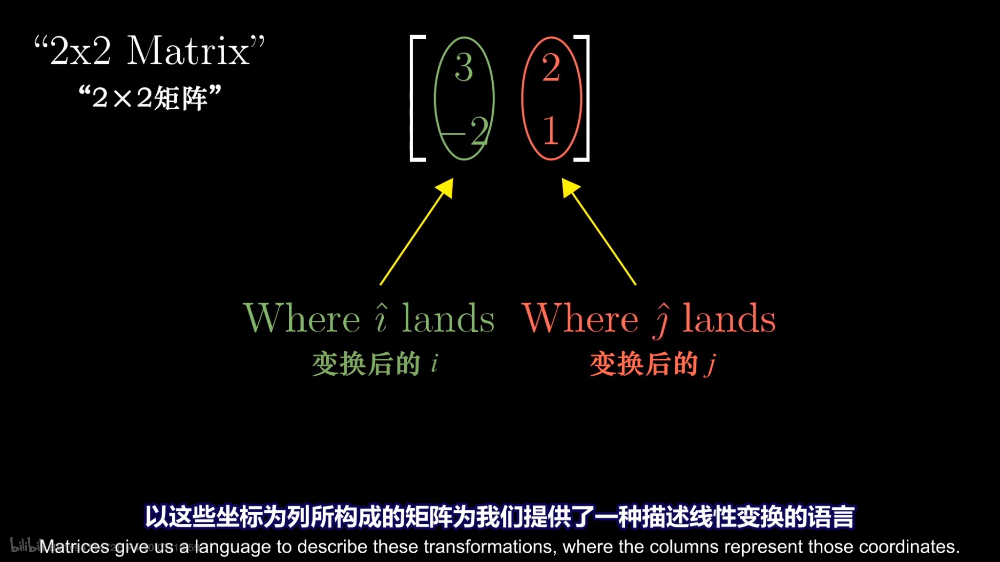
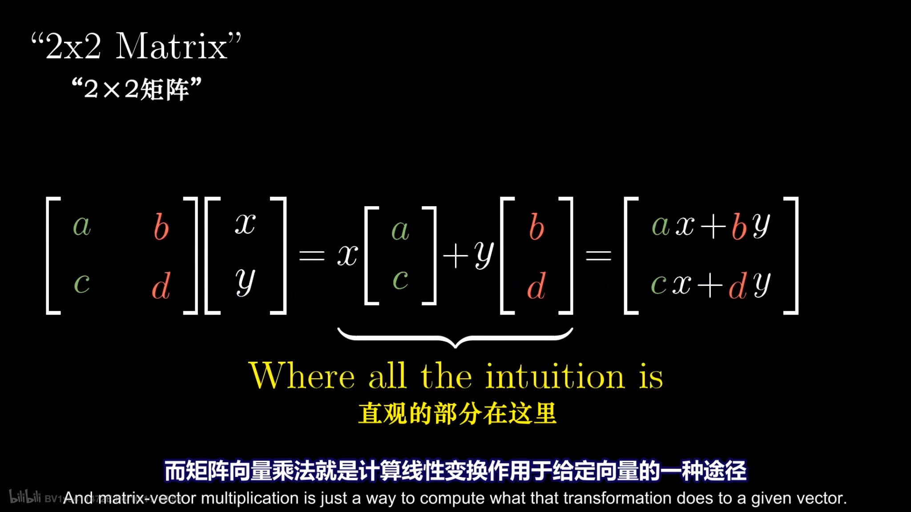
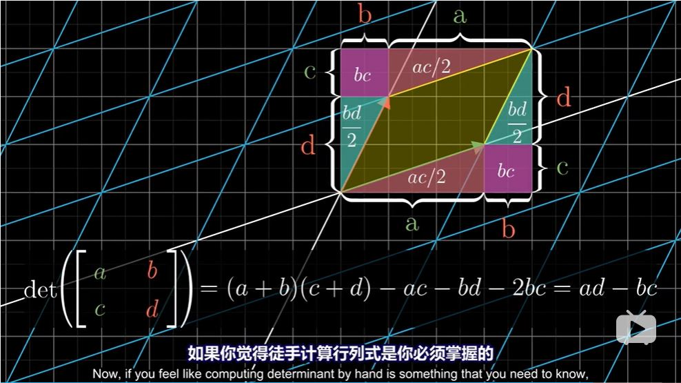

线性代数学习笔记
目录
视频-线性代数的本质
视频-线性代数的本质
02-线性组合、张成的空间与基
- 数乘以向量的和被成为向量的线性组合。
- 所有可以表示为给定向量线性组合的向量的集合被称为给定向量张成的空间（span）
- 其中一个向量可以表示为其他向量的线性组合时（这个向量已经落在其他向量张成的空间之中），称这个向量与其他向量线性相关。
- 如果所有向量都给张成的空间增加了新的维度时，它们将被称为线性无关。
- 向量空间中的一组基是张成该空间的一个线性无关向量集。
03-矩阵与线性变换
线性变换：
（1）所有直线变化后仍是直线。
（2）原点保持。
（网格线保持平行且等距分布）
矩阵就是对空间的特定变换。


04-矩阵乘法与线性变换复合
- 两个矩阵相乘的几何意义：两个线性变换相继作用。
附录1-三维空间中的线性变换
05-行列式
线性变换改变面积/体积的比例，被称为这个线性变换的行列式(值的绝对值)。
检验一个矩阵的行列式是否为0，可以知道这个矩阵所代表的变换是否将空间压缩到更小的维度上了。
行列式的符号代表了空间定向的变化。

06-逆矩阵、列空间与零空间
- 秩代表变换后空间的维度。（列空间的维度）
- 列空间：矩阵的列张成的空间。
- 变换后落在原点的向量的集合，被称为矩阵的“零空间”或“核”。